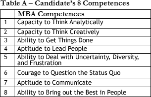
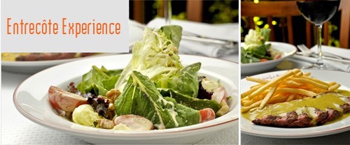
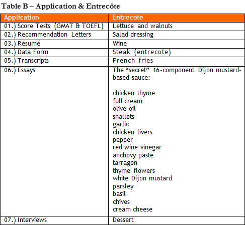

Concretely, business schools require 7 Elements from you:
01.) Essays;
02.) Interviews;
03.) Recommendation Letters;
04.) Data Form;
05.) Résumé;
06.) Score Tests (GMAT & TOEFL);
07.) Transcripts.
Cool. Have you shown them in order of importance? If not, which is the most important component in the application?
Your question reveals the applicants’ greatest difficulty understanding the process. There is simply no such a thing as ‘most important component’. All elements are important in a winning candidacy.
A friend of mine had 770 on the GMAT, applied to 7 schools and was denied by all. That is why I had this feeling that essays are the most important element.
The GMAT evaluates just your academic potential and your Analytical Thinking Capacity. There are 7 other competences involved in the MBA application process – look at Table A.

Really, it is hard to understand...
We will talk later about the competences that you must reveal in your application package. For now, I just want you to understand that Competence 1 (Analytical Thinking Capacity) is important, but it is only one among many other competences.
Ok. For those who are starting the process, it is difficult to solve this puzzle, Megaron.
For 13 years, I have been counseling students and I have used metaphors to explain the MBA application process. The one that draws more attention is the Entrecote Experience, a cooking metaphor.
A metaphor? Hum, it may help if I can see it. Can you, please, elaborate on this so-called ‘cooking metaphor’?
The assessment of an application is like the experience of enjoying a perfect French entrecote. Check the comparison:


I am not sure I get it.
Creating an MBA application is like preparing the entrecote. You will need:
(1.) various high quality ingredients (the elements of the process);
(2.) recipe (a code);
(3.) the placement of ingredients into optimal combination (the time factor).
I have heard people say that this process is like a puzzle.
That’s an inadequate metaphor. It gives the wrong impression that the candidate knows beforehand what the application’s elements are and that all he has to do is gather the pieces.
Ok. What you mean mainly is that it is not about isolated pieces but each piece will affect the others, is that so?
The cooking metaphor highlights a key element: the decisive TIME FACTOR. To prepare a sophisticated dish, you cannot just throw all the ingredients into a blender, turn it on, and voilà. The recipe, which is our code, must specify the order of interaction of the various elements. Sometimes, we must prepare part of the recipe and leave it to rest while we take care of the other parts.
And the application process is similar, I suppose?
Yes. One of the most frequent mistakes is to concentrate all efforts on the GMAT/TOEFL at the beginning of the process and leave only 1-2 months later to write the so-called essays.
Everyone who talked to me about the process agreed: the tricky part is how to write the essays.
The international applicant is not used to this kind of questioning. He is not prepared to write, in two months, about his leadership style, his main failure in life, or his ability to manage a problematic team member, among other themes.
A friend told me that he was going crazy when writing the famous Stanford essay “What matters most to you, and why?”
Well, unfortunately, many reserve one weekend to think about that. You can imagine the result.
Going back to your cooking metaphor, the data form is the steak, right?
The data form is the report you must fill out with the description of all your personal, academic, and professional activities. I can’t deny. Without a good steak, we won’t have a good dish. But remember: you will find good steak in any good butcher.
And the so-called sauce with its 16 Elements?
Perhaps you know that in Europe some restaurants serve only this dish.
Yes. Two restaurants in Sao Paulo have copied the model.
In addition, if you talk to any chef is such a restaurant; he will say that the Entrecôte Experience is determined essentially by this sauce. The balance among the 12 elements of the sauce is the great secret. Every chef is proud of the secret of his sauce.
All right, but which are, concretely, the 16 Elements of the essays?
As I told you, there is no way we can identify the most important part of the process. But we can say for sure that the hardest task when putting together the dish is the combination of the 16 elements that make the sauce. Every well-prepared applicant should know how to answer 16 MBA Application Themes:
Theme 1.) Give me ONE example of when you solved an analytical problem.
|